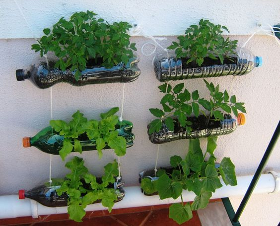

Projetos
Proteja a Fauna e Flora
Alimente uma família

Leve educação para todos
Ver mais

Paulo Rocha
Engenheira de Software Sr - São Paulo/SP
Aqui em casa já tornamos um hábito a separação de materiais recicláveis. Esse foi o volume da semana. É absurdo pensar como uma boa parte do nosso lixo pode ser reaproveitada. Agora é só aguardar o caminhão da coleta passar. Separe seu lixo você também.

Liliane Ferreira
Engenheira Elétrica - São Paulo/SP
E ficou assim nossa hortinha vertical em casa. Agora temos temperos fresquinhos para cozinhar, e sem agrotóxicos. Apenas precisamos de algumas garrafas, que fomos juntando nas últimas semanas, barbante grosso, para amarrá-las umas nas outras, e pregos para prender os barbantes na parede. Eu amei! Pretendo fazer com morangos também.

Parece que não há mais publicações para ver...

Dica do dia
Procure comprar alimentos in natura de pequenos produtores em feiras e mercadinhos locais. Assim você fortalece a economia local, tem mais acesso à procedência do alimento e reduz o imapcto ambiental causado por produções de larga escala.